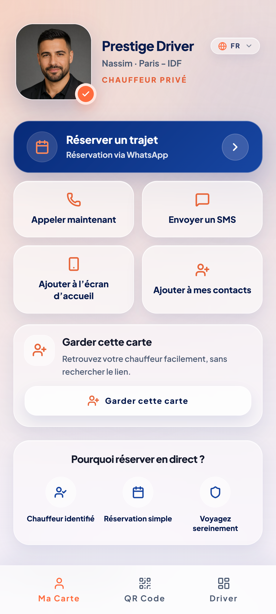
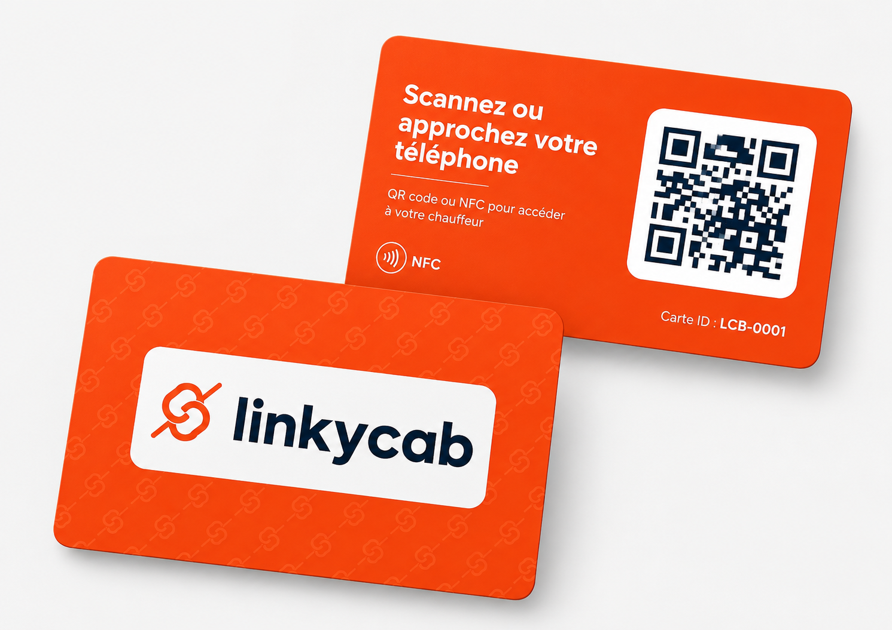
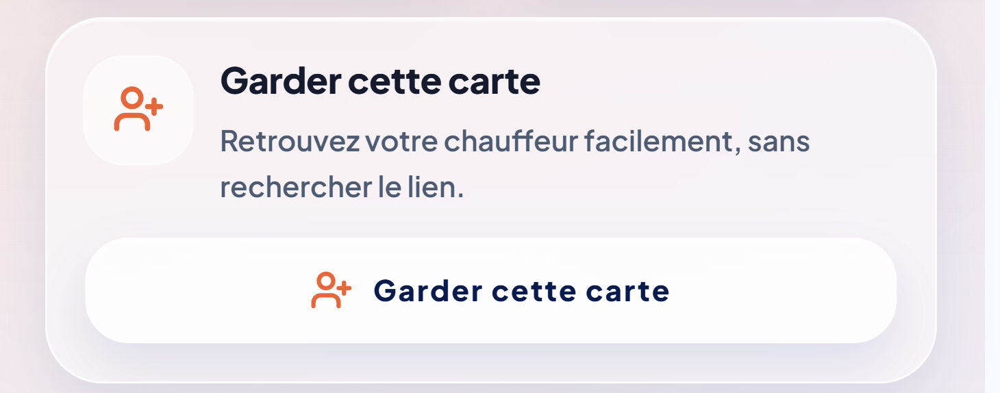

Gardez le lien avec vos clients après chaque course
Vos passagers retrouvent facilement votre carte chauffeur : appel, WhatsApp, SMS, réservation, avis Google, coordonnées.
Pensé pour les chauffeurs VTC, taxis et chauffeurs privés

Après la course, le client repart souvent sans trace
Il était satisfait, mais il ne retrouve plus votre numéro pour vous recontacter directement.
Il retourne sur une application
Il ne retrouve plus votre numéro
LinkyCab aide vos clients à vous retrouver
Après la course, le client garde votre carte et peut vous rappeler, vous écrire ou réserver plus tard.
Il ouvre votre carte chauffeur
Il vous appelle, vous écrit ou réserve
Il garde votre contact ou laisse ses coordonnées
Partagez votre carte simplement
QR Code, lien ou carte NFC : le client ouvre votre carte en quelques secondes.
QR Code
À faire scanner dans le véhicule ou sur un support.
Lien partagé
À envoyer par SMS, WhatsApp ou message.
Carte NFC
Option physique pour un accès rapide.
Carte NFC en option
Gardez votre carte sur vous. Dans la voiture, en rendez-vous ou dehors, vous partagez facilement votre carte chauffeur, sans chercher de lien à envoyer.
Offerte avec l’abonnement annuel.

Tout pour vous recontacter facilement
Votre carte permet au client de vous appeler, vous écrire, réserver ou laisser ses coordonnées.
Appeler
Un appel direct en un tap
Contact immédiat
SMS
Message rapide
Réserver
Demande de course privée
Avis Google
Un avis après la course
Ajouter contact
Carte VCF enregistrée
Laisser ses coordonnées
Pour être rappelé plus tard
Garder la carte
Retrouvée en quelques secondes
Ajout écran d’accueil
Un raccourci toujours visible
Le client garde votre carte facilement
Il peut ajouter votre contact, enregistrer la carte en favori ou l’ajouter à son écran d’accueil pour vous retrouver plus tard.

Pilotez votre carte depuis votre téléphone
Suivez les vues, retrouvez votre QR Code, consultez vos contacts et modifiez votre profil.
Votre carte travaille pour vous, même après la course.
Optimisez chaque rencontre
Chaque passager satisfait peut devenir un futur client direct, une future réservation ou un avis Google supplémentaire.
Gardez le lien après la course
Développez vos clients directs
Réduisez votre dépendance aux plateformes
Augmentez vos avis Google
Centralisez vos points de contact
Créez votre base de contacts
Simple, efficace et accessible
Choisissez l’offre LinkyCab adaptée à votre usage : abonnement mensuel, annuel avec carte NFC offerte ou carte NFC seule.
Mensuel
3,90 € / mois
Pour démarrer simplement avec une carte digitale chauffeur.
- Carte digitale LinkyCab
- QR code personnel
- Ajout contact
- Ajout écran d’accueil
- Statistiques
- Espace chauffeur
Carte NFC non incluse
Commencer au moisMeilleure offre
Annuel
29 € / an
L’offre complète avec la carte NFC physique offerte.
Carte NFC offerte avec l’abonnement annuel
- Carte digitale LinkyCab
- QR code personnel
- Ajout contact
- Ajout écran d’accueil
- Statistiques
- Espace chauffeur
- Carte NFC offerte
Carte NFC
14,90 €
Pour les chauffeurs abonnés au forfait mensuel qui veulent ajouter une carte physique.
- Carte NFC physique
- Reliée à votre carte digitale
- Numéro de carte unique
- Utilisable avec QR code et NFC
Réservé aux utilisateurs LinkyCab actifs
Commander la carte NFCUne seule course directe peut rentabiliser plusieurs mois d’abonnement.
Questions fréquentes
Le client doit-il installer une application ?
Non, le client n’a rien à installer. Il ouvre votre carte depuis son navigateur et peut la garder en contact, favori ou sur l’écran d’accueil si son téléphone le permet.
Est-ce que LinkyCab fonctionne avec un QR Code ?
Oui. Votre QR Code ouvre directement votre carte chauffeur.
Est-ce que LinkyCab fonctionne avec une carte NFC ?
Oui. La carte NFC accélère le partage sur le terrain, mais elle n’est pas obligatoire.
Le client peut-il garder ma carte ?
Oui. Il peut ajouter votre contact, enregistrer le lien ou l’ajouter à son écran d’accueil selon son téléphone.
Puis-je modifier mes informations ?
Oui. Votre espace chauffeur permet de modifier votre profil à tout moment.
Combien coûte LinkyCab ?
3,90 € / mois pour la carte digitale, 29 € / an avec la carte NFC offerte, ou 14,90 € pour commander une carte NFC seule si vous êtes déjà utilisateur LinkyCab actif.